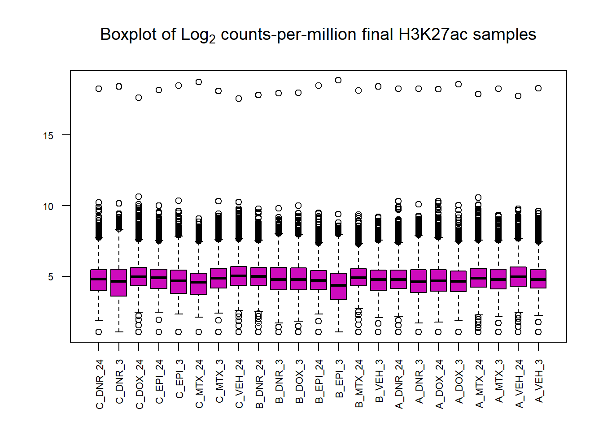

H3K27ac_data_inital_QC
Renee Matthews
2025-05-09
Last updated: 2025-05-14
Checks: 7 0
Knit directory: ATAC_learning/
This reproducible R Markdown analysis was created with workflowr (version 1.7.1). The Checks tab describes the reproducibility checks that were applied when the results were created. The Past versions tab lists the development history.
Great! Since the R Markdown file has been committed to the Git repository, you know the exact version of the code that produced these results.
Great job! The global environment was empty. Objects defined in the global environment can affect the analysis in your R Markdown file in unknown ways. For reproduciblity it’s best to always run the code in an empty environment.
The command set.seed(20231016) was run prior to running
the code in the R Markdown file. Setting a seed ensures that any results
that rely on randomness, e.g. subsampling or permutations, are
reproducible.
Great job! Recording the operating system, R version, and package versions is critical for reproducibility.
Nice! There were no cached chunks for this analysis, so you can be confident that you successfully produced the results during this run.
Great job! Using relative paths to the files within your workflowr project makes it easier to run your code on other machines.
Great! You are using Git for version control. Tracking code development and connecting the code version to the results is critical for reproducibility.
The results in this page were generated with repository version 1bb4020. See the Past versions tab to see a history of the changes made to the R Markdown and HTML files.
Note that you need to be careful to ensure that all relevant files for
the analysis have been committed to Git prior to generating the results
(you can use wflow_publish or
wflow_git_commit). workflowr only checks the R Markdown
file, but you know if there are other scripts or data files that it
depends on. Below is the status of the Git repository when the results
were generated:
Ignored files:
Ignored: .RData
Ignored: .Rhistory
Ignored: .Rproj.user/
Ignored: data/ACresp_SNP_table.csv
Ignored: data/ARR_SNP_table.csv
Ignored: data/All_merged_peaks.tsv
Ignored: data/CAD_gwas_dataframe.RDS
Ignored: data/CTX_SNP_table.csv
Ignored: data/Collapsed_expressed_NG_peak_table.csv
Ignored: data/DEG_toplist_sep_n45.RDS
Ignored: data/FRiP_first_run.txt
Ignored: data/Final_four_data/
Ignored: data/Frip_1_reads.csv
Ignored: data/Frip_2_reads.csv
Ignored: data/Frip_3_reads.csv
Ignored: data/Frip_4_reads.csv
Ignored: data/Frip_5_reads.csv
Ignored: data/Frip_6_reads.csv
Ignored: data/GO_KEGG_analysis/
Ignored: data/HF_SNP_table.csv
Ignored: data/Ind1_75DA24h_dedup_peaks.csv
Ignored: data/Ind1_TSS_peaks.RDS
Ignored: data/Ind1_firstfragment_files.txt
Ignored: data/Ind1_fragment_files.txt
Ignored: data/Ind1_peaks_list.RDS
Ignored: data/Ind1_summary.txt
Ignored: data/Ind2_TSS_peaks.RDS
Ignored: data/Ind2_fragment_files.txt
Ignored: data/Ind2_peaks_list.RDS
Ignored: data/Ind2_summary.txt
Ignored: data/Ind3_TSS_peaks.RDS
Ignored: data/Ind3_fragment_files.txt
Ignored: data/Ind3_peaks_list.RDS
Ignored: data/Ind3_summary.txt
Ignored: data/Ind4_79B24h_dedup_peaks.csv
Ignored: data/Ind4_TSS_peaks.RDS
Ignored: data/Ind4_V24h_fraglength.txt
Ignored: data/Ind4_fragment_files.txt
Ignored: data/Ind4_fragment_filesN.txt
Ignored: data/Ind4_peaks_list.RDS
Ignored: data/Ind4_summary.txt
Ignored: data/Ind5_TSS_peaks.RDS
Ignored: data/Ind5_fragment_files.txt
Ignored: data/Ind5_fragment_filesN.txt
Ignored: data/Ind5_peaks_list.RDS
Ignored: data/Ind5_summary.txt
Ignored: data/Ind6_TSS_peaks.RDS
Ignored: data/Ind6_fragment_files.txt
Ignored: data/Ind6_peaks_list.RDS
Ignored: data/Ind6_summary.txt
Ignored: data/Knowles_4.RDS
Ignored: data/Knowles_5.RDS
Ignored: data/Knowles_6.RDS
Ignored: data/LiSiLTDNRe_TE_df.RDS
Ignored: data/MI_gwas.RDS
Ignored: data/SNP_GWAS_PEAK_MRC_id
Ignored: data/SNP_GWAS_PEAK_MRC_id.csv
Ignored: data/SNP_gene_cat_list.tsv
Ignored: data/SNP_supp_schneider.RDS
Ignored: data/TE_info/
Ignored: data/TFmapnames.RDS
Ignored: data/all_TSSE_scores.RDS
Ignored: data/all_four_filtered_counts.txt
Ignored: data/aln_run1_results.txt
Ignored: data/anno_ind1_DA24h.RDS
Ignored: data/anno_ind4_V24h.RDS
Ignored: data/annotated_gwas_SNPS.csv
Ignored: data/background_n45_he_peaks.RDS
Ignored: data/cardiac_muscle_FRIP.csv
Ignored: data/cardiomyocyte_FRIP.csv
Ignored: data/col_ng_peak.csv
Ignored: data/cormotif_full_4_run.RDS
Ignored: data/cormotif_full_4_run_he.RDS
Ignored: data/cormotif_full_6_run.RDS
Ignored: data/cormotif_full_6_run_he.RDS
Ignored: data/cormotif_probability_45_list.csv
Ignored: data/cormotif_probability_45_list_he.csv
Ignored: data/cormotif_probability_all_6_list.csv
Ignored: data/cormotif_probability_all_6_list_he.csv
Ignored: data/datasave.RDS
Ignored: data/embryo_heart_FRIP.csv
Ignored: data/enhancer_list_ENCFF126UHK.bed
Ignored: data/enhancerdata/
Ignored: data/filt_Peaks_efit2.RDS
Ignored: data/filt_Peaks_efit2_bl.RDS
Ignored: data/filt_Peaks_efit2_n45.RDS
Ignored: data/first_Peaksummarycounts.csv
Ignored: data/first_run_frag_counts.txt
Ignored: data/full_bedfiles/
Ignored: data/gene_ref.csv
Ignored: data/gwas_1_dataframe.RDS
Ignored: data/gwas_2_dataframe.RDS
Ignored: data/gwas_3_dataframe.RDS
Ignored: data/gwas_4_dataframe.RDS
Ignored: data/gwas_5_dataframe.RDS
Ignored: data/high_conf_peak_counts.csv
Ignored: data/high_conf_peak_counts.txt
Ignored: data/high_conf_peaks_bl_counts.txt
Ignored: data/high_conf_peaks_counts.txt
Ignored: data/hits_files/
Ignored: data/hyper_files/
Ignored: data/hypo_files/
Ignored: data/ind1_DA24hpeaks.RDS
Ignored: data/ind1_TSSE.RDS
Ignored: data/ind2_TSSE.RDS
Ignored: data/ind3_TSSE.RDS
Ignored: data/ind4_TSSE.RDS
Ignored: data/ind4_V24hpeaks.RDS
Ignored: data/ind5_TSSE.RDS
Ignored: data/ind6_TSSE.RDS
Ignored: data/initial_complete_stats_run1.txt
Ignored: data/left_ventricle_FRIP.csv
Ignored: data/median_24_lfc.RDS
Ignored: data/median_3_lfc.RDS
Ignored: data/mergedPeads.gff
Ignored: data/mergedPeaks.gff
Ignored: data/motif_list_full
Ignored: data/motif_list_n45
Ignored: data/motif_list_n45.RDS
Ignored: data/multiqc_fastqc_run1.txt
Ignored: data/multiqc_fastqc_run2.txt
Ignored: data/multiqc_genestat_run1.txt
Ignored: data/multiqc_genestat_run2.txt
Ignored: data/my_hc_filt_counts.RDS
Ignored: data/my_hc_filt_counts_n45.RDS
Ignored: data/n45_bedfiles/
Ignored: data/n45_files
Ignored: data/other_papers/
Ignored: data/peakAnnoList_1.RDS
Ignored: data/peakAnnoList_2.RDS
Ignored: data/peakAnnoList_24_full.RDS
Ignored: data/peakAnnoList_24_n45.RDS
Ignored: data/peakAnnoList_3.RDS
Ignored: data/peakAnnoList_3_full.RDS
Ignored: data/peakAnnoList_3_n45.RDS
Ignored: data/peakAnnoList_4.RDS
Ignored: data/peakAnnoList_5.RDS
Ignored: data/peakAnnoList_6.RDS
Ignored: data/peakAnnoList_Eight.RDS
Ignored: data/peakAnnoList_full_motif.RDS
Ignored: data/peakAnnoList_n45_motif.RDS
Ignored: data/siglist_full.RDS
Ignored: data/siglist_n45.RDS
Ignored: data/summarized_peaks_dataframe.txt
Ignored: data/summary_peakIDandReHeat.csv
Ignored: data/test.list.RDS
Ignored: data/testnames.txt
Ignored: data/toplist_6.RDS
Ignored: data/toplist_full.RDS
Ignored: data/toplist_full_DAR_6.RDS
Ignored: data/toplist_n45.RDS
Ignored: data/trimmed_seq_length.csv
Ignored: data/unclassified_full_set_peaks.RDS
Ignored: data/unclassified_n45_set_peaks.RDS
Ignored: data/xstreme/
Untracked files:
Untracked: RNA_seq_integration.Rmd
Untracked: analysis/Diagnosis-tmm.Rmd
Untracked: analysis/Expressed_RNA_associations.Rmd
Untracked: analysis/H3K27ac_integration_noM.Rmd
Untracked: analysis/LFC_corr.Rmd
Untracked: analysis/SVA.Rmd
Untracked: analysis/Tan2020.Rmd
Untracked: analysis/making_master_peaks_list.Rmd
Untracked: analysis/my_hc_filt_counts.csv
Untracked: code/IGV_snapshot_code.R
Untracked: code/LongDARlist.R
Untracked: code/just_for_Fun.R
Untracked: output/cormotif_probability_45_list.csv
Untracked: output/cormotif_probability_all_6_list.csv
Untracked: setup.RData
Unstaged changes:
Modified: ATAC_learning.Rproj
Modified: analysis/AF_HF_SNPs.Rmd
Modified: analysis/Cardiotox_SNPs.Rmd
Modified: analysis/Cormotif_analysis.Rmd
Modified: analysis/Counts_matrix.Rmd
Modified: analysis/Enhancer_enrichment.Rmd
Modified: analysis/H3K27ac_cormotif.Rmd
Modified: analysis/H3K27ac_integration.Rmd
Modified: analysis/Jaspar_motif.Rmd
Modified: analysis/Jaspar_motif_ff.Rmd
Modified: analysis/RNA_seq_integration.Rmd
Modified: analysis/TSS_and_CUG.Rmd
Modified: analysis/final_four_analysis.Rmd
Note that any generated files, e.g. HTML, png, CSS, etc., are not included in this status report because it is ok for generated content to have uncommitted changes.
These are the previous versions of the repository in which changes were
made to the R Markdown (analysis/H3K27ac_initial_QC.Rmd)
and HTML (docs/H3K27ac_initial_QC.html) files. If you’ve
configured a remote Git repository (see ?wflow_git_remote),
click on the hyperlinks in the table below to view the files as they
were in that past version.
| File | Version | Author | Date | Message |
|---|---|---|---|---|
| Rmd | 1bb4020 | reneeisnowhere | 2025-05-14 | taking out extra section |
| html | 7fcb892 | reneeisnowhere | 2025-05-12 | Build site. |
| Rmd | 2b4cfbd | reneeisnowhere | 2025-05-12 | wflow_publish("analysis/H3K27ac_initial_QC.Rmd") |
| html | 035f37b | reneeisnowhere | 2025-05-09 | Build site. |
| Rmd | 15e8bfc | reneeisnowhere | 2025-05-09 | adding H3K27ac reanalysis. |
library(tidyverse)
library(kableExtra)
library(broom)
library(RColorBrewer)
library(ChIPseeker)
library("TxDb.Hsapiens.UCSC.hg38.knownGene")
# library("org.Hs.eg.db")
library(rtracklayer)
library(edgeR)
# library(ggfortify)
library(limma)
library(readr)
library(BiocGenerics)
library(gridExtra)
library(VennDiagram)
library(scales)
library(BiocParallel)
library(ggpubr)
library(devtools)
library(eulerr)
library(genomation)
library(ggsignif)
library(plyranges)
library(ggrepel)
library(ComplexHeatmap)
library(smplot2)
library(stringr)
library(cowplot)Function loading
drug_pal <- c("#8B006D","#DF707E","#F1B72B", "#3386DD","#41B333")
prop_var_percent <- function(pca_result){
# Ensure the input is a PCA result object
if (!inherits(pca_result, "prcomp")) {
stop("Input must be a result from prcomp()")
}
# Get the standard deviations from the PCA result
sdev <- pca_result$sdev
# Calculate the proportion of variance
proportion_variance <- (sdev^2) / sum(sdev^2)*100
return(proportion_variance)
}Importing the count file and editing names
### file originally loaded from ~/ATAC_files/peaks_folder/Raodah_data/H3K27ac_count.txt
### Blacklisted regions were removed
H3K27ac_raw_count <- read_delim("C:/Users/renee/ATAC_folder/peaks folder/Raodah_data/H3K27ac_count.txt",
delim = "\t",
escape_double = FALSE,
trim_ws = TRUE,
skip = 1)
### simplifying names to paper names
names(H3K27ac_raw_count) <- names(H3K27ac_raw_count) |>
gsub("_final\\.bam.*", "", x = _) |>
gsub("^Individual_data/(77-1|87-1|71-1)/bamFiles/", "", x = _) |>
gsub("87_1_", "A_", x = _) |>
gsub("77_1_", "B_", x = _) |>
gsub("71_1_", "C_", x = _) |>
gsub("3$", "_3", x = _) |>
gsub("24$", "_24", x = _)
sample_peaks_locations <- H3K27ac_raw_count[1:6]
raw_counts_only <- H3K27ac_raw_count[,c(1,7:31)]
sample_peaks_locations %>%
GRanges() %>%
saveRDS("data/Final_four_data/re_analysis/H3K27ac_granges_df.RDS")Looking at raw counts QC
PCA_H3_mat <- raw_counts_only%>% column_to_rownames("Geneid") %>%
as.matrix()
hist(PCA_H3_mat, main= "Raw counts across samples",
xlab = "Raw counts",
col=4)
| Version | Author | Date |
|---|---|---|
| 035f37b | reneeisnowhere | 2025-05-09 |
hist(cpm(PCA_H3_mat, log=TRUE),
main = expression("Histogram of Log"[2]*" cpm unfiltered"),
xlab = expression("Log"[2]*" counts-per-million"),
col=4)
| Version | Author | Date |
|---|---|---|
| 035f37b | reneeisnowhere | 2025-05-09 |
boxplot(cpm(PCA_H3_mat, log=TRUE),
main=expression("Boxplot of Log"[2]*" counts-per-million"),
col=4,
names=colnames(PCA_H3_mat),
las=2, cex.axis=.7)
| Version | Author | Date |
|---|---|---|
| 035f37b | reneeisnowhere | 2025-05-09 |
Heatmap of unfiltered log2 cpm counts
cor_raw_counts <- PCA_H3_mat %>%
cpm(., log = TRUE) %>%
cor(.,method = "pearson")
anno_raw_counts <- data.frame(timeset = colnames(PCA_H3_mat))
counts_corr_mat <-anno_raw_counts %>%
separate(timeset, into = c("indv","trt","time"), sep= "_") %>%
mutate(class = if_else(trt == "DNR", "AC",
if_else(trt == "DOX", "AC",
if_else(trt == "EPI", "AC", "nAC")))) %>%
mutate(TOP2i = if_else(trt == "DNR", "yes",
if_else(trt == "DOX", "yes",
if_else(trt == "EPI", "yes",
if_else(trt == "MTX", "yes", "no")))))
mat_colors <- list(
trt= c("#F1B72B","#8B006D","#DF707E","#3386DD","#41B333"),
indv=c("#1B9E77", "#D95F02" ,"#7570B3"),
time=c("pink", "chocolate4"),
class=c("yellow1","darkorange1"),
TOP2i =c("darkgreen","lightgreen"))
names(mat_colors$trt) <- unique(counts_corr_mat$trt)
names(mat_colors$indv) <- unique(counts_corr_mat$indv)
names(mat_colors$time) <- unique(counts_corr_mat$time)
names(mat_colors$class) <- unique(counts_corr_mat$class)
names(mat_colors$TOP2i) <- unique(counts_corr_mat$TOP2i)
htanno_full <- ComplexHeatmap::HeatmapAnnotation(df = counts_corr_mat, col = mat_colors)
Heatmap(cor_raw_counts, top_annotation = htanno_full, column_title = "H3K27ac log2 cpm unfiltered counts correlation")
| Version | Author | Date |
|---|---|---|
| 035f37b | reneeisnowhere | 2025-05-09 |
Filtering out low count enriched regions
lcpm <- cpm(PCA_H3_mat, log= TRUE)
### for determining the basic cutoffs
filt_raw_counts <- PCA_H3_mat[rowMeans(lcpm)> 0,]
dim(filt_raw_counts)[1] 20137 25tail(rownames(filt_raw_counts),n=10) [1] "chrX.154515375.154517834" "chrX.154526840.154527801"
[3] "chrX.154531568.154532847" "chrX.154546431.154547623"
[5] "chrX.154762614.154763946" "chrX.155026613.155027943"
[7] "chrX.155070633.155072047" "chrX.155215803.155217295"
[9] "chrX.155612083.155613144" "chrX.155719034.155719529"There is no change in filtering out regions using rowMeans(log2cpm)>0, but I will still use the filtered matrix name in the following PCA plots
Examining PCA
filt_matrix_lcpm <- cpm(filt_raw_counts , log=TRUE)
## store PRcomp
PCA_H3K27ac_info_filter <- (prcomp(t(filt_matrix_lcpm), scale. = TRUE))
###make annotation dataframe
annotation_mat <- data.frame(timeset=colnames(filt_matrix_lcpm)) %>%
mutate(sample = timeset) %>%
separate(timeset, into = c("indv","trt","time"), sep= "_") %>%
mutate(time = factor(time, levels = c("3", "24"), labels= c("3 hours","24 hours"))) %>%
mutate(trt = factor(trt, levels = c("DOX","EPI", "DNR", "MTX", "TRZ", "VEH")))
### join together for plotting
pca_H3K27ac_anno <- data.frame(annotation_mat, PCA_H3K27ac_info_filter$x)
plotting_var_names <- prop_var_percent(PCA_H3K27ac_info_filter)
pca_H3K27ac_anno %>%
ggplot(.,aes(x = PC1, y = PC2, col=trt, shape=time, group=indv))+
geom_point(size= 5)+
scale_color_manual(values=drug_pal)+
ggrepel::geom_text_repel(aes(label = indv))+
ggtitle(expression("PCA of log"[2]*"(cpm) H3K27ac filtered enriched regions"))+
theme_bw()+
guides(col="none", size =4)+
labs(y = paste0("PC 2 (",round(plotting_var_names[2],2),"%)")
, x =paste0("PC 1 (",round(plotting_var_names[1],2),"%)"))+
theme(plot.title=element_text(size= 14,hjust = 0.5),
axis.title = element_text(size = 12, color = "black"))
| Version | Author | Date |
|---|---|---|
| 035f37b | reneeisnowhere | 2025-05-09 |
pca_H3K27ac_anno %>%
ggplot(.,aes(x = PC3, y = PC4, col=trt, shape=time, group=indv))+
geom_point(size= 5)+
scale_color_manual(values=drug_pal)+
ggrepel::geom_text_repel(aes(label = indv))+
ggtitle(expression("PCA of log"[2]*"(cpm) H3K27ac filtered enriched regions"))+
theme_bw()+
guides(col="none", size =4)+
labs(y = paste0("PC 4 (",round(plotting_var_names[4],1),"%)")
, x =paste0("PC 3 (",round(plotting_var_names[3],1),"%)"))+
theme(plot.title=element_text(size= 14,hjust = 0.5),
axis.title = element_text(size = 12, color = "black"))
| Version | Author | Date |
|---|---|---|
| 035f37b | reneeisnowhere | 2025-05-09 |
Like the correlation plots, B-24hour VEH and C 3 hour VEH are not aliging with the rest of the data. This is in line with the number of peaks called by each set (data not shown here). This led us to remove the two outliers for further analysis
Removing outliers
Removing C_VEH_3 and B_VEH_24 from matrix and reanalyzing
final_23_mat <- PCA_H3_mat %>%
as.data.frame() %>%
dplyr::select(!C_VEH_3) %>%
dplyr::select(!B_VEH_24) %>%
as.matrix()
hist(final_23_mat, main= "Raw counts across final samples",
xlab = "Raw counts",
col=6)
hist(cpm(final_23_mat, log=TRUE),
main = expression("Histogram of Log"[2]*" cpm unfiltered final counts H3K27ac"),
xlab = expression("Log"[2]*" counts-per-million"),
col=6)
boxplot(cpm(final_23_mat, log=TRUE),
main=expression("Boxplot of Log"[2]*" counts-per-million final H3K27ac samples"),
col=6,
names=colnames(final_23_mat),
las=2, cex.axis=.7)
saveRDS(final_23_mat, "data/Final_four_data/re_analysis/H3K27ac_final_23_raw_counts.RDS")Filtering check
lcpm_f <- cpm(final_23_mat, log= TRUE)
### for determining the basic cutoffs
filt_final_raw_counts <- final_23_mat[rowMeans(lcpm_f)> 0,]
dim(filt_final_raw_counts)[1] 20137 23Still no change in row number. Number of enriched regions is 20137, 23 (rows and columns)
Differentially acetylated enriched regions
groupset <- colnames(final_23_mat)
split_parts <- strsplit(groupset, "_")
group <- sapply(split_parts, function(x) paste(x[2], x[3], sep = "_"))
indv <- sapply(split_parts, function(x) paste(x[1]))
group <- factor(group, levels=c("DNR_24","DNR_3","DOX_24","DOX_3","EPI_24","EPI_3","MTX_24","MTX_3","VEH_24","VEH_3"))
dge <- DGEList.data.frame(counts = final_23_mat, group = group, genes = row.names(final_23_mat))
dge <- calcNormFactors(dge)
dge$samples group lib.size norm.factors
C_DNR_24 DNR_24 662075 0.9880860
C_DNR_3 DNR_3 304401 0.9449674
C_DOX_24 DOX_24 1184054 1.1516301
C_EPI_24 EPI_24 582422 1.0381793
C_EPI_3 EPI_3 344951 0.9248089
C_MTX_24 MTX_24 454798 0.8269981
C_MTX_3 MTX_3 625668 1.0524885
C_VEH_24 VEH_24 1297229 1.1877036
B_DNR_24 DNR_24 1637644 1.1481949
B_DNR_3 DNR_3 1693158 1.0600627
B_DOX_3 DOX_3 1397016 1.0510043
B_EPI_24 EPI_24 675946 0.9361002
B_EPI_3 EPI_3 492082 0.7423355
B_MTX_24 MTX_24 1124918 1.0782328
B_VEH_3 VEH_3 926454 0.9588624
A_DNR_24 DNR_24 1231409 0.9933291
A_DNR_3 DNR_3 894507 0.9522172
A_DOX_24 DOX_24 762252 0.9612265
A_DOX_3 DOX_3 619348 0.8824246
A_MTX_24 MTX_24 2236590 1.0893364
A_MTX_3 MTX_3 868211 1.0179427
A_VEH_24 VEH_24 1539759 1.1458191
A_VEH_3 VEH_3 753791 1.0001017Making model matrix
mm <- model.matrix(~0 +group)
colnames(mm) <- c("DNR_24", "DNR_3", "DOX_24","DOX_3","EPI_24", "EPI_3","MTX_24", "MTX_3","VEH_24", "VEH_3")
mm DNR_24 DNR_3 DOX_24 DOX_3 EPI_24 EPI_3 MTX_24 MTX_3 VEH_24 VEH_3
1 1 0 0 0 0 0 0 0 0 0
2 0 1 0 0 0 0 0 0 0 0
3 0 0 1 0 0 0 0 0 0 0
4 0 0 0 0 1 0 0 0 0 0
5 0 0 0 0 0 1 0 0 0 0
6 0 0 0 0 0 0 1 0 0 0
7 0 0 0 0 0 0 0 1 0 0
8 0 0 0 0 0 0 0 0 1 0
9 1 0 0 0 0 0 0 0 0 0
10 0 1 0 0 0 0 0 0 0 0
11 0 0 0 1 0 0 0 0 0 0
12 0 0 0 0 1 0 0 0 0 0
13 0 0 0 0 0 1 0 0 0 0
14 0 0 0 0 0 0 1 0 0 0
15 0 0 0 0 0 0 0 0 0 1
16 1 0 0 0 0 0 0 0 0 0
17 0 1 0 0 0 0 0 0 0 0
18 0 0 1 0 0 0 0 0 0 0
19 0 0 0 1 0 0 0 0 0 0
20 0 0 0 0 0 0 1 0 0 0
21 0 0 0 0 0 0 0 1 0 0
22 0 0 0 0 0 0 0 0 1 0
23 0 0 0 0 0 0 0 0 0 1
attr(,"assign")
[1] 1 1 1 1 1 1 1 1 1 1
attr(,"contrasts")
attr(,"contrasts")$group
[1] "contr.treatment"y <- voom(dge, mm,plot =FALSE)
corfit <- duplicateCorrelation(y, mm, block = indv)
v <- voom(dge, mm, block = indv, correlation = corfit$consensus)
fit <- lmFit(v, mm, block = indv, correlation = corfit$consensus)
cm <- makeContrasts(
DNR_3.VEH_3 = DNR_3-VEH_3,
DOX_3.VEH_3 = DOX_3-VEH_3,
EPI_3.VEH_3 = EPI_3-VEH_3,
MTX_3.VEH_3 = MTX_3-VEH_3,
DNR_24.VEH_24 =DNR_24-VEH_24,
DOX_24.VEH_24= DOX_24-VEH_24,
EPI_24.VEH_24= EPI_24-VEH_24,
MTX_24.VEH_24= MTX_24-VEH_24,
levels = mm)
fit2<- contrasts.fit(fit, contrasts=cm)
efit2 <- eBayes(fit2)
results = decideTests(efit2)
summary(results) DNR_3.VEH_3 DOX_3.VEH_3 EPI_3.VEH_3 MTX_3.VEH_3 DNR_24.VEH_24
Down 867 86 0 0 1752
NotSig 18860 20023 20137 20137 16317
Up 410 28 0 0 2068
DOX_24.VEH_24 EPI_24.VEH_24 MTX_24.VEH_24
Down 188 48 0
NotSig 19297 19754 20136
Up 652 335 1plotSA(efit2, main="Mean-Variance trend for final model of H3K27ac")
V.DNR_3.top= topTable(efit2, coef=1, adjust.method="BH", number=Inf, sort.by="p")
V.DOX_3.top= topTable(efit2, coef=2, adjust.method="BH", number=Inf, sort.by="p")
V.EPI_3.top= topTable(efit2, coef=3, adjust.method="BH", number=Inf, sort.by="p")
V.MTX_3.top= topTable(efit2, coef=4, adjust.method="BH", number=Inf, sort.by="p")
V.DNR_24.top= topTable(efit2, coef=5, adjust.method="BH", number=Inf, sort.by="p")
V.DOX_24.top= topTable(efit2, coef=6, adjust.method="BH", number=Inf, sort.by="p")
V.EPI_24.top= topTable(efit2, coef=7, adjust.method="BH", number=Inf, sort.by="p")
V.MTX_24.top= topTable(efit2, coef=8, adjust.method="BH", number=Inf, sort.by="p")
# plot_filenames <- c("V.DNR_3.top","V.DOX_3.top","V.EPI_3.top","V.MTX_3.top",
# "V.TRZ_.top","V.DNR_24.top","V.DOX_24.top","V.EPI_24.top",
# "V.MTX_24.top","V.TRZ_24.top")
# plot_files <- c( V.DNR_3.top,V.DOX_3.top,V.EPI_3.top,V.MTX_3.top,
# V.TRZ_3.top,V.DNR_24.top,V.DOX_24.top,V.EPI_24.top,
# V.MTX_24.top,V.TRZ_24.top)
save_list <- list("DNR_3"=V.DNR_3.top,"DOX_3"=V.DOX_3.top,"EPI_3"=V.EPI_3.top,"MTX_3"=V.MTX_3.top,"DNR_24"=V.DNR_24.top,"DOX_24"=V.DOX_24.top,"EPI_24"=V.EPI_24.top,"MTX_24"= V.MTX_24.top)
saveRDS(save_list,"data/Final_four_data/re_analysis/Toptable_results_H3K27ac_data.RDS")volcanosig <- function(df, psig.lvl) {
df <- df %>%
mutate(threshold = ifelse(adj.P.Val > psig.lvl, "A", ifelse(adj.P.Val <= psig.lvl & logFC<=0,"B","C")))
# ifelse(adj.P.Val <= psig.lvl & logFC >= 0,"B", "C")))
##This is where I could add labels, but I have taken out
# df <- df %>% mutate(genelabels = "")
# df$genelabels[1:topg] <- df$rownames[1:topg]
ggplot(df, aes(x=logFC, y=-log10(P.Value))) +
ggrastr::geom_point_rast(aes(color=threshold))+
# geom_text_repel(aes(label = genelabels), segment.curvature = -1e-20,force = 1,size=2.5,
# arrow = arrow(length = unit(0.015, "npc")), max.overlaps = Inf) +
#geom_hline(yintercept = -log10(psig.lvl))+
xlab(expression("Log"[2]*" FC"))+
ylab(expression("-log"[10]*"P Value"))+
scale_color_manual(values = c("black", "red","blue"))+
theme_cowplot()+
ylim(0,15)+
xlim(-7,7)+
theme(legend.position = "none",
plot.title = element_text(size = rel(1.5), hjust = 0.5),
axis.title = element_text(size = rel(0.8)))
}
v1 <- volcanosig(V.DNR_3.top, 0.05)+ ggtitle("DNR 3 hour")
v2 <- volcanosig(V.DNR_24.top, 0.05)+ ggtitle("DNR 24 hour")+ylab("")
v3 <- volcanosig(V.DOX_3.top, 0.05)+ ggtitle("DOX 3 hour")
v4 <- volcanosig(V.DOX_24.top, 0.05)+ ggtitle("DOX 24 hour")+ylab("")
v5 <- volcanosig(V.EPI_3.top, 0.05)+ ggtitle("EPI 3 hour")
v6 <- volcanosig(V.EPI_24.top, 0.05)+ ggtitle("EPI 24 hour")+ylab("")
v7 <- volcanosig(V.MTX_3.top, 0.05)+ ggtitle("MTX 3 hour")
v8 <- volcanosig(V.MTX_24.top, 0.05)+ ggtitle("MTX 24 hour")+ylab("")
plot_grid(v1,v2, rel_widths =c(1,1))
plot_grid(v3,v4, rel_widths =c(1,1))
plot_grid(v5,v6, rel_widths =c(1,1))
plot_grid(v7,v8, rel_widths =c(1,1))
H3K27ac enriched regions median dataframe calculations
all_results <- bind_rows(save_list, .id = "group")
median_df <- all_results %>%
separate(group, into=c("trt","time"),sep = "_") %>%
pivot_wider(., id_cols=c(time,genes), names_from = trt, values_from = logFC) %>%
rowwise() %>%
mutate(median_H3K27ac_lfc= median(c_across(DNR:MTX)))
median_3_lfc <- median_df %>%
dplyr::filter(time == "3") %>%
ungroup() %>%
dplyr::select(time, genes,median_H3K27ac_lfc) %>%
dplyr::rename("med_Kac_3h_lfc"=median_H3K27ac_lfc, "H3K27ac_peak"=genes)
median_24_lfc <- median_df %>%
dplyr::filter(time == "24") %>%
ungroup() %>%
dplyr::select(time, genes,median_H3K27ac_lfc) %>%
dplyr::rename("med_Kac_24h_lfc"=median_H3K27ac_lfc,, "H3K27ac_peak"=genes)
write_csv(median_3_lfc, "data/Final_four_data/re_analysis/median_3_lfc_H3K27ac_norm.csv")
write_csv(median_24_lfc, "data/Final_four_data/re_analysis/median_24_lfc_H3K27ac_norm.csv")Correlation of LFC between treatments
AC_matrix_ff <- subset(efit2$coefficients)
colnames(AC_matrix_ff) <-
c("DNR\n3h",
"DOX\n3h",
"EPI\n3h",
"MTX\n3h",
"DNR\n24h",
"DOX\n24h",
"EPI\n24h",
"MTX\n24h"
)
mat_col_ac <-
data.frame(
time = c(rep("3 hours", 4), rep("24 hours", 4)),
class = (c(
"AC", "AC", "AC", "nAC","AC", "AC", "AC", "nAC"
)))
rownames(mat_col_ac) <- colnames(AC_matrix_ff)
mat_colors_ac <-
list(
time = c("pink", "chocolate4"),
class = c("yellow1", "lightgreen"))
names(mat_colors_ac$time) <- unique(mat_col_ac$time)
names(mat_colors_ac$class) <- unique(mat_col_ac$class)
# names(mat_colors_FC$TOP2i) <- unique(mat_col_FC$TOP2i)
pearson_corr_AC<- cor(AC_matrix_ff, method = "pearson")
spearman_corr_AC <- cor(AC_matrix_ff, method = "spearman")
htanno_AC <- HeatmapAnnotation(df = mat_col_ac, col = mat_colors_ac)
Heatmap(pearson_corr_AC, top_annotation = htanno_AC,
column_title = "H3K27ac LFC Pearson Correlation")
Heatmap(spearman_corr_AC, top_annotation = htanno_AC,
column_title = "H3K27ac LFC Spearman Correlation")
Raw counts without chrM (not doing)
PCA_H3_mat_noM <-raw_counts_only%>%
column_to_rownames("Geneid") %>%
dplyr::filter(!grepl("^chrM", rownames(.))) %>%
as.matrix()
hist(PCA_H3_mat_noM, main= "Raw counts across samples",
xlab = "Raw counts",
col=4)
hist(cpm(PCA_H3_mat_noM, log=TRUE),
main = expression("Histogram of Log"[2]*" cpm unfiltered"),
xlab = expression("Log"[2]*" counts-per-million"),
col=4)
boxplot(cpm(PCA_H3_mat_noM, log=TRUE),
main=expression("Boxplot of Log"[2]*" counts-per-million without chrM"),
col=4,
names=colnames(PCA_H3_mat_noM),
las=2, cex.axis=.7)Removing outlier noM
Removing C_VEH_3 and B_VEH_24 from matrix and reanalyzing
final_23_mat_noM <- PCA_H3_mat_noM %>%
as.data.frame() %>%
dplyr::select(!C_VEH_3) %>%
dplyr::select(!B_VEH_24) %>%
as.matrix()
hist(final_23_mat_noM, main= "Raw counts across final samples_noM",
xlab = "Raw counts",
col=6)
hist(cpm(final_23_mat_noM, log=TRUE),
main = expression("Histogram of Log"[2]*" cpm unfiltered final counts H3K27ac_noM"),
xlab = expression("Log"[2]*" counts-per-million"),
col=6)
boxplot(cpm(final_23_mat_noM, log=TRUE),
main=expression("Boxplot of Log"[2]*" counts-per-million final H3K27ac samples_noM"),
col=6,
names=colnames(final_23_mat_noM),
las=2, cex.axis=.7)
saveRDS(final_23_mat_noM, "data/Final_four_data/re_analysis/H3K27ac_final_23_raw_counts_noM.RDS")cor_raw_counts_noM <- PCA_H3_mat_noM %>%
cpm(., log = TRUE) %>%
cor(.,method = "pearson")
anno_raw_counts_noM <- data.frame(timeset = colnames(PCA_H3_mat))
counts_corr_mat_noM <-anno_raw_counts_noM %>%
separate(timeset, into = c("indv","trt","time"), sep= "_") %>%
mutate(class = if_else(trt == "DNR", "AC",
if_else(trt == "DOX", "AC",
if_else(trt == "EPI", "AC", "nAC")))) %>%
mutate(TOP2i = if_else(trt == "DNR", "yes",
if_else(trt == "DOX", "yes",
if_else(trt == "EPI", "yes",
if_else(trt == "MTX", "yes", "no")))))
mat_colors <- list(
trt= c("#F1B72B","#8B006D","#DF707E","#3386DD","#41B333"),
indv=c("#1B9E77", "#D95F02" ,"#7570B3"),
time=c("pink", "chocolate4"),
class=c("yellow1","darkorange1"),
TOP2i =c("darkgreen","lightgreen"))
names(mat_colors$trt) <- unique(counts_corr_mat$trt)
names(mat_colors$indv) <- unique(counts_corr_mat$indv)
names(mat_colors$time) <- unique(counts_corr_mat$time)
names(mat_colors$class) <- unique(counts_corr_mat$class)
names(mat_colors$TOP2i) <- unique(counts_corr_mat$TOP2i)
htanno_full <- ComplexHeatmap::HeatmapAnnotation(df = counts_corr_mat_noM, col = mat_colors)
Heatmap(cor_raw_counts_noM, top_annotation = htanno_full, column_title = "H3K27ac log2 cpm unfiltered counts correlation noM")Filtering check
lcpm_f_noM <- cpm(final_23_mat_noM, log= TRUE)
### for determining the basic cutoffs
filt_final_raw_counts_noM <- final_23_mat_noM[rowMeans(lcpm_f_noM)> 0,]
dim(filt_final_raw_counts_noM)Still no change in row number. Number of enriched regions is 20137, 23 (rows and columns)
Differentially acetylated enriched regions noM
groupset <- colnames(final_23_mat_noM)
split_parts <- strsplit(groupset, "_")
group <- sapply(split_parts, function(x) paste(x[2], x[3], sep = "_"))
indv <- sapply(split_parts, function(x) paste(x[1]))
group <- factor(group, levels=c("DNR_24","DNR_3","DOX_24","DOX_3","EPI_24","EPI_3","MTX_24","MTX_3","VEH_24","VEH_3"))
dge_noM <- DGEList.data.frame(counts = final_23_mat_noM, group = group, genes = row.names(final_23_mat_noM))
dge_noM <- calcNormFactors(dge_noM)
dge_noM$samplesMaking model matrix
mm <- model.matrix(~0 +group)
colnames(mm) <- c("DNR_24", "DNR_3", "DOX_24","DOX_3","EPI_24", "EPI_3","MTX_24", "MTX_3","VEH_24", "VEH_3")
mmy <- voom(dge_noM, mm,plot =FALSE)
corfit <- duplicateCorrelation(y, mm, block = indv)
v <- voom(dge_noM, mm, block = indv, correlation = corfit$consensus)
fit <- lmFit(v, mm, block = indv, correlation = corfit$consensus)
cm <- makeContrasts(
DNR_3.VEH_3 = DNR_3-VEH_3,
DOX_3.VEH_3 = DOX_3-VEH_3,
EPI_3.VEH_3 = EPI_3-VEH_3,
MTX_3.VEH_3 = MTX_3-VEH_3,
DNR_24.VEH_24 =DNR_24-VEH_24,
DOX_24.VEH_24= DOX_24-VEH_24,
EPI_24.VEH_24= EPI_24-VEH_24,
MTX_24.VEH_24= MTX_24-VEH_24,
levels = mm)
fit2<- contrasts.fit(fit, contrasts=cm)
efit2_noM <- eBayes(fit2)
results_noM = decideTests(efit2_noM)
summary(results_noM)
plotSA(efit2_noM, main="Mean-Variance trend for final model of H3K27ac")V.DNR_3.top= topTable(efit2_noM, coef=1, adjust.method="BH", number=Inf, sort.by="p")
V.DOX_3.top= topTable(efit2_noM, coef=2, adjust.method="BH", number=Inf, sort.by="p")
V.EPI_3.top= topTable(efit2_noM, coef=3, adjust.method="BH", number=Inf, sort.by="p")
V.MTX_3.top= topTable(efit2_noM, coef=4, adjust.method="BH", number=Inf, sort.by="p")
V.DNR_24.top= topTable(efit2_noM, coef=5, adjust.method="BH", number=Inf, sort.by="p")
V.DOX_24.top= topTable(efit2_noM, coef=6, adjust.method="BH", number=Inf, sort.by="p")
V.EPI_24.top= topTable(efit2_noM, coef=7, adjust.method="BH", number=Inf, sort.by="p")
V.MTX_24.top= topTable(efit2_noM, coef=8, adjust.method="BH", number=Inf, sort.by="p")
# plot_filenames <- c("V.DNR_3.top","V.DOX_3.top","V.EPI_3.top","V.MTX_3.top",
# "V.TRZ_.top","V.DNR_24.top","V.DOX_24.top","V.EPI_24.top",
# "V.MTX_24.top","V.TRZ_24.top")
# plot_files <- c( V.DNR_3.top,V.DOX_3.top,V.EPI_3.top,V.MTX_3.top,
# V.TRZ_3.top,V.DNR_24.top,V.DOX_24.top,V.EPI_24.top,
# V.MTX_24.top,V.TRZ_24.top)
save_list <- list("DNR_3"=V.DNR_3.top,"DOX_3"=V.DOX_3.top,"EPI_3"=V.EPI_3.top,"MTX_3"=V.MTX_3.top,"DNR_24"=V.DNR_24.top,"DOX_24"=V.DOX_24.top,"EPI_24"=V.EPI_24.top,"MTX_24"= V.MTX_24.top)
saveRDS(save_list,"data/Final_four_data/re_analysis/Toptable_results_H3K27ac_data_noM.RDS")volcanosig <- function(df, psig.lvl) {
df <- df %>%
mutate(threshold = ifelse(adj.P.Val > psig.lvl, "A", ifelse(adj.P.Val <= psig.lvl & logFC<=0,"B","C")))
# ifelse(adj.P.Val <= psig.lvl & logFC >= 0,"B", "C")))
##This is where I could add labels, but I have taken out
# df <- df %>% mutate(genelabels = "")
# df$genelabels[1:topg] <- df$rownames[1:topg]
ggplot(df, aes(x=logFC, y=-log10(P.Value))) +
geom_point(aes(color=threshold))+
# geom_text_repel(aes(label = genelabels), segment.curvature = -1e-20,force = 1,size=2.5,
# arrow = arrow(length = unit(0.015, "npc")), max.overlaps = Inf) +
#geom_hline(yintercept = -log10(psig.lvl))+
xlab(expression("Log"[2]*" FC"))+
ylab(expression("-log"[10]*"P Value"))+
scale_color_manual(values = c("black", "red","blue"))+
theme_cowplot()+
ylim(0,20)+
xlim(-6,6)+
theme(legend.position = "none",
plot.title = element_text(size = rel(1.5), hjust = 0.5),
axis.title = element_text(size = rel(0.8)))
}
v1 <- volcanosig(V.DNR_3.top, 0.05)+ ggtitle("DNR 3 hour")
v2 <- volcanosig(V.DNR_24.top, 0.05)+ ggtitle("DNR 24 hour")+ylab("")
v3 <- volcanosig(V.DOX_3.top, 0.05)+ ggtitle("DOX 3 hour")
v4 <- volcanosig(V.DOX_24.top, 0.05)+ ggtitle("DOX 24 hour")+ylab("")
v5 <- volcanosig(V.EPI_3.top, 0.05)+ ggtitle("EPI 3 hour")
v6 <- volcanosig(V.EPI_24.top, 0.05)+ ggtitle("EPI 24 hour")+ylab("")
v7 <- volcanosig(V.MTX_3.top, 0.05)+ ggtitle("MTX 3 hour")
v8 <- volcanosig(V.MTX_24.top, 0.05)+ ggtitle("MTX 24 hour")+ylab("")
plot_grid(v1,v2, rel_widths =c(1,1))
plot_grid(v3,v4, rel_widths =c(1,1))
plot_grid(v5,v6, rel_widths =c(1,1))
plot_grid(v7,v8, rel_widths =c(1,1))Correlation of LFC between treatments noM
AC_matrix_ff_noM <- subset(efit2_noM$coefficients)
colnames(AC_matrix_ff_noM) <-
c("DNR\n3h",
"DOX\n3h",
"EPI\n3h",
"MTX\n3h",
"DNR\n24h",
"DOX\n24h",
"EPI\n24h",
"MTX\n24h"
)
mat_col_ac_noM <-
data.frame(
time = c(rep("3 hours", 4), rep("24 hours", 4)),
class = (c(
"AC", "AC", "AC", "nAC","AC", "AC", "AC", "nAC"
)))
rownames(mat_col_ac_noM) <- colnames(AC_matrix_ff_noM)
mat_colors_ac_noM <-
list(
time = c("pink", "chocolate4"),
class = c("yellow1", "lightgreen"))
names(mat_colors_ac_noM$time) <- unique(mat_col_ac_noM$time)
names(mat_colors_ac_noM$class) <- unique(mat_col_ac_noM$class)
# names(mat_colors_FC$TOP2i) <- unique(mat_col_FC$TOP2i)
pearson_corr_AC_noM<- cor(AC_matrix_ff_noM, method = "pearson")
spearman_corr_AC_noM <- cor(AC_matrix_ff_noM, method = "spearman")
htanno_AC_noM <- HeatmapAnnotation(df = mat_col_ac_noM, col = mat_colors_ac_noM)
Heatmap(pearson_corr_AC_noM, top_annotation = htanno_AC_noM,
column_title = "H3K27ac LFC Pearson Correlation")
Heatmap(spearman_corr_AC_noM, top_annotation = htanno_AC_noM,
column_title = "H3K27ac LFC Spearman Correlation")
sessionInfo()R version 4.4.2 (2024-10-31 ucrt)
Platform: x86_64-w64-mingw32/x64
Running under: Windows 11 x64 (build 26100)
Matrix products: default
locale:
[1] LC_COLLATE=English_United States.utf8
[2] LC_CTYPE=English_United States.utf8
[3] LC_MONETARY=English_United States.utf8
[4] LC_NUMERIC=C
[5] LC_TIME=English_United States.utf8
time zone: America/Chicago
tzcode source: internal
attached base packages:
[1] grid stats4 stats graphics grDevices utils datasets
[8] methods base
other attached packages:
[1] cowplot_1.1.3
[2] smplot2_0.2.5
[3] ComplexHeatmap_2.22.0
[4] ggrepel_0.9.6
[5] plyranges_1.26.0
[6] ggsignif_0.6.4
[7] genomation_1.38.0
[8] eulerr_7.0.2
[9] devtools_2.4.5
[10] usethis_3.1.0
[11] ggpubr_0.6.0
[12] BiocParallel_1.40.0
[13] scales_1.3.0
[14] VennDiagram_1.7.3
[15] futile.logger_1.4.3
[16] gridExtra_2.3
[17] edgeR_4.4.2
[18] limma_3.62.2
[19] rtracklayer_1.66.0
[20] TxDb.Hsapiens.UCSC.hg38.knownGene_3.20.0
[21] GenomicFeatures_1.58.0
[22] AnnotationDbi_1.68.0
[23] Biobase_2.66.0
[24] GenomicRanges_1.58.0
[25] GenomeInfoDb_1.42.3
[26] IRanges_2.40.1
[27] S4Vectors_0.44.0
[28] BiocGenerics_0.52.0
[29] ChIPseeker_1.42.1
[30] RColorBrewer_1.1-3
[31] broom_1.0.7
[32] kableExtra_1.4.0
[33] lubridate_1.9.4
[34] forcats_1.0.0
[35] stringr_1.5.1
[36] dplyr_1.1.4
[37] purrr_1.0.4
[38] readr_2.1.5
[39] tidyr_1.3.1
[40] tibble_3.2.1
[41] ggplot2_3.5.1
[42] tidyverse_2.0.0
[43] workflowr_1.7.1
loaded via a namespace (and not attached):
[1] fs_1.6.5
[2] matrixStats_1.5.0
[3] bitops_1.0-9
[4] enrichplot_1.26.6
[5] httr_1.4.7
[6] doParallel_1.0.17
[7] profvis_0.4.0
[8] tools_4.4.2
[9] backports_1.5.0
[10] R6_2.6.1
[11] lazyeval_0.2.2
[12] GetoptLong_1.0.5
[13] urlchecker_1.0.1
[14] withr_3.0.2
[15] cli_3.6.4
[16] formatR_1.14
[17] Cairo_1.6-2
[18] labeling_0.4.3
[19] sass_0.4.9
[20] Rsamtools_2.22.0
[21] systemfonts_1.2.1
[22] yulab.utils_0.2.0
[23] foreign_0.8-88
[24] DOSE_4.0.0
[25] svglite_2.1.3
[26] R.utils_2.13.0
[27] sessioninfo_1.2.3
[28] plotrix_3.8-4
[29] BSgenome_1.74.0
[30] pwr_1.3-0
[31] rstudioapi_0.17.1
[32] impute_1.80.0
[33] RSQLite_2.3.9
[34] shape_1.4.6.1
[35] generics_0.1.3
[36] gridGraphics_0.5-1
[37] TxDb.Hsapiens.UCSC.hg19.knownGene_3.2.2
[38] BiocIO_1.16.0
[39] vroom_1.6.5
[40] gtools_3.9.5
[41] car_3.1-3
[42] GO.db_3.20.0
[43] Matrix_1.7-3
[44] ggbeeswarm_0.7.2
[45] abind_1.4-8
[46] R.methodsS3_1.8.2
[47] lifecycle_1.0.4
[48] whisker_0.4.1
[49] yaml_2.3.10
[50] carData_3.0-5
[51] SummarizedExperiment_1.36.0
[52] gplots_3.2.0
[53] qvalue_2.38.0
[54] SparseArray_1.6.2
[55] blob_1.2.4
[56] promises_1.3.2
[57] crayon_1.5.3
[58] miniUI_0.1.1.1
[59] ggtangle_0.0.6
[60] lattice_0.22-6
[61] KEGGREST_1.46.0
[62] magick_2.8.5
[63] pillar_1.10.1
[64] knitr_1.49
[65] fgsea_1.32.2
[66] rjson_0.2.23
[67] boot_1.3-31
[68] codetools_0.2-20
[69] fastmatch_1.1-6
[70] glue_1.8.0
[71] getPass_0.2-4
[72] ggfun_0.1.8
[73] data.table_1.17.0
[74] remotes_2.5.0
[75] vctrs_0.6.5
[76] png_0.1-8
[77] treeio_1.30.0
[78] gtable_0.3.6
[79] cachem_1.1.0
[80] xfun_0.51
[81] S4Arrays_1.6.0
[82] mime_0.12
[83] iterators_1.0.14
[84] statmod_1.5.0
[85] ellipsis_0.3.2
[86] nlme_3.1-167
[87] ggtree_3.14.0
[88] bit64_4.6.0-1
[89] rprojroot_2.0.4
[90] bslib_0.9.0
[91] vipor_0.4.7
[92] rpart_4.1.24
[93] KernSmooth_2.23-26
[94] Hmisc_5.2-2
[95] colorspace_2.1-1
[96] DBI_1.2.3
[97] nnet_7.3-20
[98] seqPattern_1.38.0
[99] ggrastr_1.0.2
[100] tidyselect_1.2.1
[101] processx_3.8.6
[102] bit_4.6.0
[103] compiler_4.4.2
[104] curl_6.2.1
[105] git2r_0.35.0
[106] htmlTable_2.4.3
[107] xml2_1.3.7
[108] DelayedArray_0.32.0
[109] checkmate_2.3.2
[110] caTools_1.18.3
[111] callr_3.7.6
[112] digest_0.6.37
[113] rmarkdown_2.29
[114] XVector_0.46.0
[115] base64enc_0.1-3
[116] htmltools_0.5.8.1
[117] pkgconfig_2.0.3
[118] MatrixGenerics_1.18.1
[119] fastmap_1.2.0
[120] GlobalOptions_0.1.2
[121] rlang_1.1.5
[122] htmlwidgets_1.6.4
[123] UCSC.utils_1.2.0
[124] shiny_1.10.0
[125] farver_2.1.2
[126] jquerylib_0.1.4
[127] zoo_1.8-13
[128] jsonlite_1.9.1
[129] GOSemSim_2.32.0
[130] R.oo_1.27.0
[131] RCurl_1.98-1.16
[132] magrittr_2.0.3
[133] Formula_1.2-5
[134] GenomeInfoDbData_1.2.13
[135] ggplotify_0.1.2
[136] patchwork_1.3.0
[137] munsell_0.5.1
[138] Rcpp_1.0.14
[139] ape_5.8-1
[140] stringi_1.8.4
[141] zlibbioc_1.52.0
[142] plyr_1.8.9
[143] pkgbuild_1.4.6
[144] parallel_4.4.2
[145] Biostrings_2.74.1
[146] splines_4.4.2
[147] circlize_0.4.16
[148] hms_1.1.3
[149] locfit_1.5-9.12
[150] ps_1.9.0
[151] igraph_2.1.4
[152] reshape2_1.4.4
[153] pkgload_1.4.0
[154] futile.options_1.0.1
[155] XML_3.99-0.18
[156] evaluate_1.0.3
[157] lambda.r_1.2.4
[158] foreach_1.5.2
[159] tzdb_0.4.0
[160] httpuv_1.6.15
[161] clue_0.3-66
[162] gridBase_0.4-7
[163] xtable_1.8-4
[164] restfulr_0.0.15
[165] tidytree_0.4.6
[166] rstatix_0.7.2
[167] later_1.4.1
[168] viridisLite_0.4.2
[169] aplot_0.2.5
[170] beeswarm_0.4.0
[171] memoise_2.0.1
[172] GenomicAlignments_1.42.0
[173] cluster_2.1.8.1
[174] timechange_0.3.0